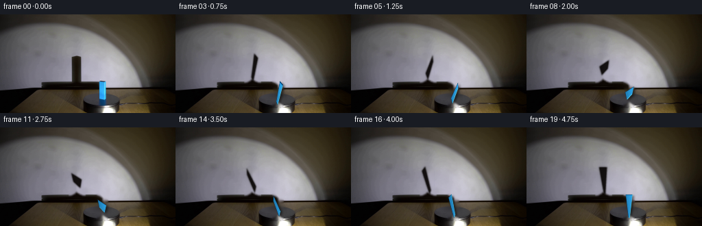
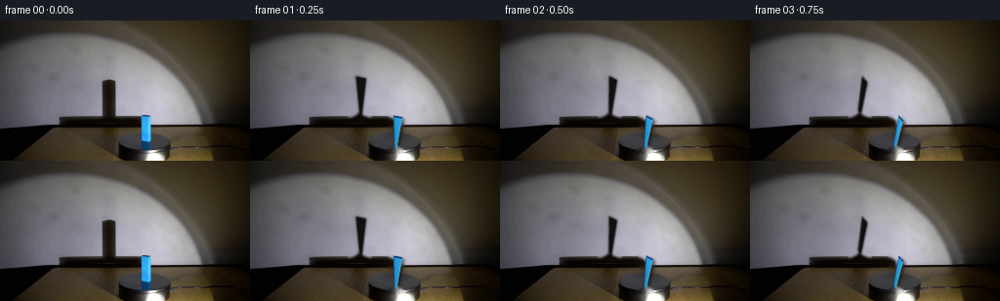
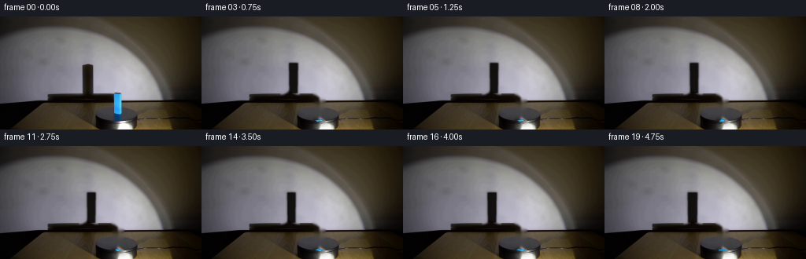
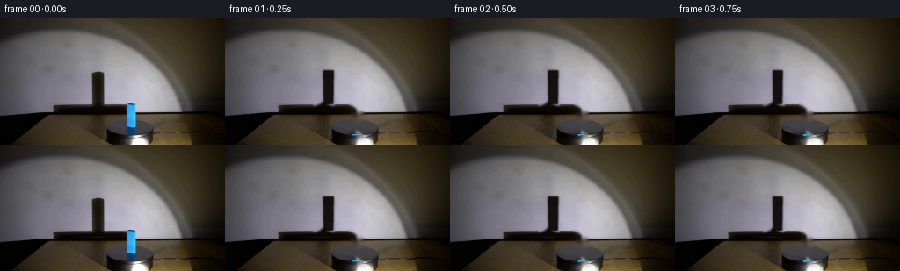

CODING AGENTS AS PIXEL WORLD MODELS
traex/DeepSeek-V4.1-Flash · 0074
点击播放 · 原生 RGB 像素
逐轮保存的候选
回放视频、检查图与代码变化。
每份候选均可单独播放。实际图片检查记录在下方工具轨迹中。
候选 01播放与检查图
点击播放 · 原生 RGB 像素


展开代码变化
--- 上一保存版本
+++ 本次保存版本
@@ -0,0 +1,265 @@
+from pathlib import Path
+
+import cv2
+import numpy as np
+from PIL import Image, ImageDraw
+
+import artifact_io
+
+
+CASE_DIR = Path(__file__).resolve().parent
+WIDTH, HEIGHT = 256, 144
+N_FRAMES, FPS = 20, 4
+
+# Projection of the platform plane. The near edge is at y=98 and the
+# rectangular slab's depth direction compresses toward y=132.
+CX = 149.5
+NEAR_Y = 98.0
+DEPTH_SCALE = 34.0 / 3.0
+LATERAL_SCALE = 10.0
+PERSPECTIVE = 4.0 / 3.0
+
+# Material and lighting sampled from the supplied frame.
+BLUE_DARK = np.array([8, 57, 98], dtype=np.float32)
+BLUE_MID = np.array([43, 168, 243], dtype=np.float32)
+BLUE_LIGHT = np.array([87, 218, 253], dtype=np.float32)
+SHADOW_RGB = np.array([7, 4, 3], dtype=np.float32)
+
+
+def _mask_from_thresholds(rgb):
+ r, g, b = [rgb[..., i].astype(np.int16) for i in range(3)]
+ return (b - r > 24) & (b - g > 8) & (b > 45)
+
+
+def _dilate(mask, radius):
+ kernel = cv2.getStructuringElement(
+ cv2.MORPH_ELLIPSE, (radius * 2 + 1, radius * 2 + 1)
+ )
+ return cv2.dilate(mask.astype(np.uint8), kernel, iterations=1).astype(bool)
+
+
+def _make_clean_plate(frame):
+ """Remove the movable slab and its wall shadow from the supplied frame."""
+ rgb = frame.astype(np.uint8)
+ h, w = rgb.shape[:2]
+
+ yy, xx = np.mgrid[:h, :w]
+ blue = _mask_from_thresholds(rgb)
+ blue &= (xx >= 139) & (xx <= 159) & (yy >= 95) & (yy <= 134)
+ object_mask = _dilate(blue, 2)
+
+ # The wall shadow is the narrow, dark projected strip above and left of
+ # the slab. Restricting this to the wall avoids disturbing the table.
+ luminance = rgb.astype(np.float32) @ np.array([0.299, 0.587, 0.114])
+ shadow_roi = (xx >= 98) & (xx <= 126) & (yy >= 53) & (yy <= 99)
+ shadow_mask = shadow_roi & (luminance < 48)
+ shadow_mask = _dilate(shadow_mask, 2)
+
+ repair = _dilate(object_mask | shadow_mask, 1).astype(np.uint8)
+ repaired = cv2.inpaint(rgb, repair, 3, cv2.INPAINT_TELEA)
+
+ # A very light local blur removes inpaint streaks without flattening the
+ # spotlight falloff on the surrounding wall.
+ soft = cv2.GaussianBlur(repaired, (0, 0), 0.65)
+ feather = cv2.GaussianBlur(repair.astype(np.float32), (0, 0), 1.0)
+ feather = np.clip(feather * 1.5, 0.0, 1.0)[..., None]
+ plate = repaired.astype(np.float32) * (1.0 - feather) + soft.astype(np.float32) * feather
+ return np.clip(plate, 0, 255)
+
+
+def _project(x, depth):
+ scale = 1.0 / (1.0 + PERSPECTIVE * depth)
+ sx = CX + LATERAL_SCALE * x * scale
+ sy = NEAR_Y + DEPTH_SCALE * depth
+ return np.array([sx, sy], dtype=np.float64)
+
+
+def _slab_corners(angle):
+ # Clockwise rotation as seen from above. In this projection positive
+ # image-plane angles turn clockwise because screen y grows downward.
+ c, s = np.cos(angle), np.sin(angle)
+ local = np.array(
+ [[-0.5, -1.5], [0.5, -1.5], [0.5, 1.5], [-0.5, 1.5]],
+ dtype=np.float64,
+ )
+ world = np.empty_like(local)
+ world[:, 0] = local[:, 0] * c - local[:, 1] * s
+ world[:, 1] = local[:, 0] * s + local[:, 1] * c + 1.5
+ return np.array([_project(x, d) for x, d in world], dtype=np.float64)
+
+
+def _polygon_alpha(points, size, supersample=4, blur=0.65):
+ scale = supersample
+ canvas = Image.new("L", (size[0] * scale, size[1] * scale), 0)
+ draw = ImageDraw.Draw(canvas)
+ draw.polygon([(float(x * scale), float(y * scale)) for x, y in points], fill=255)
+ canvas = canvas.resize(size, Image.Resampling.BOX)
+ alpha = np.asarray(canvas, dtype=np.float32) / 255.0
+ if blur > 0:
+ alpha = cv2.GaussianBlur(alpha, (0, 0), blur)
+ return np.clip(alpha, 0.0, 1.0)
+
+
+def _shadow_points(corners):
+ """Project the slab silhouette onto the rear wall."""
+ result = []
+ for x, y in corners:
+ wall_x = CX + 1.15 * (x - CX) - 38.0 + 2.5 * (y - NEAR_Y) / 34.0
+ wall_y = 58.0 + 1.16 * (y - NEAR_Y)
+ result.append((wall_x, wall_y))
+ return np.array(result, dtype=np.float64)
+
+
+def _draw_shadow(frame, corners, wall_mask):
+ points = _shadow_points(corners)
+ core = _polygon_alpha(points, (WIDTH, HEIGHT), blur=0.85)
+ penumbra = _polygon_alpha(points, (WIDTH, HEIGHT), blur=2.0)
+ alpha = np.clip(0.90 * core + 0.16 * penumbra, 0.0, 0.93) * wall_mask
+
+ # The wall receives a warm, nearly black shadow with a soft penumbra.
+ shadow_tint = np.broadcast_to(SHADOW_RGB, frame.shape).copy()
+ frame[:] = frame * (1.0 - alpha[..., None]) + shadow_tint * alpha[..., None]
+
+
+def _draw_contact_shadow(frame, corners):
+ shifted = corners + np.array([2.7, 1.8])
+ alpha = _polygon_alpha(shifted, (WIDTH, HEIGHT), blur=1.5) * 0.48
+ frame[:] = frame * (1.0 - alpha[..., None]) + np.array([3, 2, 1]) * alpha[..., None]
+
+ # A small ambient-occlusion patch keeps the slab visually planted.
+ center = corners.mean(axis=0)
+ yy, xx = np.mgrid[:HEIGHT, :WIDTH]
+ ao = np.exp(
+ -(
+ ((xx - center[0]) / 13.0) ** 2
+ + ((yy - (center[1] + 1.5)) / 5.5) ** 2
+ )
+ )
+ frame[:] = frame * (1.0 - 0.24 * ao[..., None])
+
+
+def _edge_normal(corner_a, corner_b, center):
+ edge = corner_b - corner_a
+ normal = np.array([edge[1], -edge[0]], dtype=np.float64)
+ normal /= max(np.linalg.norm(normal), 1e-6)
+ midpoint = 0.5 * (corner_a + corner_b)
+ if np.dot(normal, midpoint - center) < 0:
+ normal = -normal
+ return normal
+
+
+def _draw_slab(frame, corners, angle):
+ ss = 4
+ big_w, big_h = WIDTH * ss, HEIGHT * ss
+ points = [(float(x * ss), float(y * ss)) for x, y in corners]
+
+ mask_img = Image.new("L", (big_w, big_h), 0)
+ draw = ImageDraw.Draw(mask_img)
+ draw.polygon(points, fill=255)
+ mask = np.asarray(mask_img, dtype=np.float32) / 255.0
+
+ yy, xx = np.mgrid[:big_h, :big_w]
+ xs = xx.astype(np.float32) / ss
+ ys = yy.astype(np.float32) / ss
+
+ # A cyan-blue surface with a warm spotlight falloff from lower right.
+ grad = np.clip(0.78 + 0.018 * (xs - CX) - 0.006 * (ys - NEAR_Y), 0.62, 1.10)
+ light_distance = np.sqrt(((xs - 159.0) / 28.0) ** 2 + ((ys - 138.0) / 34.0) ** 2)
+ grad += np.clip(0.22 - 0.13 * light_distance, -0.06, 0.20)
+ color = BLUE_MID[None, None, :] * grad[..., None]
+
+ # Cool edge tone and a restrained specular sheen along the lit side.
+ edge_tone = np.clip(1.0 - np.abs(xs - CX) / 23.0, 0.0, 1.0)
+ color += BLUE_LIGHT[None, None, :] * (0.055 * edge_tone * grad)[..., None]
+ rng = np.random.default_rng(74)
+ texture = rng.normal(0.0, 1.35, (big_h, big_w, 1)).astype(np.float32)
+ color += texture
+ color = np.clip(color, 0, 255).astype(np.float32)
+
+ overlay = frame.copy()
+ overlay = cv2.resize(overlay, (big_w, big_h), interpolation=cv2.INTER_LINEAR)
+ overlay = overlay * (1.0 - mask[..., None]) + color * mask[..., None]
+
+ center = corners.mean(axis=0)
+ light_screen = np.array([159.0, 138.0])
+ edge_strengths = []
+ for i in range(4):
+ a, b = corners[i], corners[(i + 1) % 4]
+ n = _edge_normal(a, b, center)
+ to_light = light_screen - 0.5 * (a + b)
+ to_light /= max(np.linalg.norm(to_light), 1e-6)
+ edge_strengths.append(float(np.clip(np.dot(n, to_light), -1.0, 1.0)))
+
+ big_draw = Image.fromarray(np.clip(overlay, 0, 255).astype(np.uint8))
+ big_draw_draw = ImageDraw.Draw(big_draw)
+ for i, strength in enumerate(edge_strengths):
+ a = corners[i]
+ b = corners[(i + 1) % 4]
+ if strength > 0.08:
+ edge_color = tuple(
+ int(v) for v in np.clip(BLUE_LIGHT * (0.72 + 0.25 * strength), 0, 255)
+ )
+ width = max(1, int(round((0.9 + 0.9 * strength) * ss)))
+ else:
+ edge_color = tuple(int(v) for v in BLUE_DARK)
+ width = max(1, int(round(0.8 * ss)))
+ big_draw_draw.line(
+ [(float(a[0] * ss), float(a[1] * ss)), (float(b[0] * ss), float(b[1] * ss))],
+ fill=edge_color,
+ width=width,
+ )
+
+ # A narrow extruded edge gives the flat slab visible thickness.
+ near_pair = corners[:2]
+ thickness = 1.8
+ side_points = [
+ tuple(near_pair[0] * ss),
+ tuple(near_pair[1] * ss),
+ tuple((near_pair[1] + np.array([0.0, thickness])) * ss),
+ tuple((near_pair[0] + np.array([0.0, thickness])) * ss),
+ ]
+ big_draw_draw.polygon(side_points, fill=(10, 66, 111))
+
+ result = np.asarray(big_draw, dtype=np.float32)
+ result = cv2.resize(result, (WIDTH, HEIGHT), interpolation=cv2.INTER_AREA)
+ # Preserve the surrounding plate exactly outside a slightly dilated slab
+ # silhouette, while retaining antialiasing at the boundary.
+ slab_alpha = cv2.resize(mask, (WIDTH, HEIGHT), interpolation=cv2.INTER_AREA)
+ slab_alpha = cv2.GaussianBlur(slab_alpha, (0, 0), 0.35)
+ slab_alpha = np.clip(slab_alpha * 1.08, 0.0, 1.0)
+ frame[:] = frame * (1.0 - slab_alpha[..., None]) + result * slab_alpha[..., None]
+
+
+def _wall_mask():
+ yy, xx = np.mgrid[:HEIGHT, :WIDTH]
+ mask = (yy < 99).astype(np.float32)
+ mask *= np.clip((99.0 - yy) / 2.0, 0.0, 1.0)
+ mask *= (xx > 12).astype(np.float32)
+ return mask
+
+
+def main():
+ first = np.array(Image.open(CASE_DIR / "first_frame.png").convert("RGB"), dtype=np.uint8)
+ assert first.shape == (HEIGHT, WIDTH, 3)
+
+ plate = _make_clean_plate(first)
+ wall = _wall_mask()
+ frames = np.empty((N_FRAMES, HEIGHT, WIDTH, 3), dtype=np.uint8)
+ frames[0] = first
+
+ for index in range(1, N_FRAMES):
+ # Half a clockwise turn over the five-second shot.
+ angle = np.pi * index / (N_FRAMES - 1)
+ corners = _slab_corners(angle)
+ frame = plate.copy()
+ _draw_shadow(frame, corners, wall)
+ _draw_contact_shadow(frame, corners)
+ _draw_slab(frame, corners, angle)
+ frames[index] = np.clip(np.rint(frame), 0, 255).astype(np.uint8)
+
+ frames[0] = first
+ artifact_io.save(frames, CASE_DIR)
+
+
+if __name__ == "__main__":
+ main()
候选 02播放与检查图
点击播放 · 原生 RGB 像素


展开代码变化
--- 上一保存版本
+++ 本次保存版本
@@ -11,13 +11,16 @@
WIDTH, HEIGHT = 256, 144
N_FRAMES, FPS = 20, 4
-# Projection of the platform plane. The near edge is at y=98 and the
-# rectangular slab's depth direction compresses toward y=132.
+# The source frame is a close, low-angle view of the black turntable. The
+# standing blue prism occupies x=144..155 and y=98..133. Its rear face is
+# compressed by perspective, so only the near face and a narrow side are
+# visible.
CX = 149.5
-NEAR_Y = 98.0
-DEPTH_SCALE = 34.0 / 3.0
-LATERAL_SCALE = 10.0
-PERSPECTIVE = 4.0 / 3.0
+BASE_Y = 132.5
+BLOCK_W = 10.0
+BLOCK_D = 6.0
+BLOCK_H = 34.0
+PROJECTED_H = 2.7
# Material and lighting sampled from the supplied frame.
BLUE_DARK = np.array([8, 57, 98], dtype=np.float32)
@@ -68,24 +71,41 @@
def _project(x, depth):
- scale = 1.0 / (1.0 + PERSPECTIVE * depth)
- sx = CX + LATERAL_SCALE * x * scale
- sy = NEAR_Y + DEPTH_SCALE * depth
- return np.array([sx, sy], dtype=np.float64)
-
-
-def _slab_corners(angle):
- # Clockwise rotation as seen from above. In this projection positive
- # image-plane angles turn clockwise because screen y grows downward.
+ # Orthographic footprint with a small oblique depth cue. The camera is
+ # close enough that the top face is visible as a thin 3-pixel strip.
+ return np.array([CX + BLOCK_W * x, BASE_Y - PROJECTED_H - 3.0 * depth])
+
+
+def _block_footprint(angle):
+ # Clockwise rotation as seen from above.
c, s = np.cos(angle), np.sin(angle)
local = np.array(
- [[-0.5, -1.5], [0.5, -1.5], [0.5, 1.5], [-0.5, 1.5]],
+ [
+ [-0.5, -BLOCK_D / BLOCK_W / 2],
+ [0.5, -BLOCK_D / BLOCK_W / 2],
+ [0.5, BLOCK_D / BLOCK_W / 2],
+ [-0.5, BLOCK_D / BLOCK_W / 2],
+ ],
dtype=np.float64,
)
world = np.empty_like(local)
world[:, 0] = local[:, 0] * c - local[:, 1] * s
- world[:, 1] = local[:, 0] * s + local[:, 1] * c + 1.5
+ world[:, 1] = local[:, 0] * s + local[:, 1] * c
return np.array([_project(x, d) for x, d in world], dtype=np.float64)
+
+
+def _slab_corners(angle):
+ """Silhouette of the upright prism, including the visible top face."""
+ footprint = _block_footprint(angle)
+ center = footprint.mean(axis=0)
+ bottom = footprint.copy()
+ top = footprint + np.array([0.0, -BLOCK_H])
+ bottom = bottom - np.array([center[0], bottom[:, 1].mean()])
+ top = top - np.array([center[0], top[:, 1].mean()])
+ bottom += np.array([CX, BASE_Y])
+ top += np.array([CX, BASE_Y])
+ hull = cv2.convexHull(np.vstack([bottom, top]).astype(np.float32))
+ return hull[:, 0, :].astype(np.float64)
def _polygon_alpha(points, size, supersample=4, blur=0.65):
@@ -102,12 +122,21 @@
def _shadow_points(corners):
"""Project the slab silhouette onto the rear wall."""
- result = []
- for x, y in corners:
- wall_x = CX + 1.15 * (x - CX) - 38.0 + 2.5 * (y - NEAR_Y) / 34.0
- wall_y = 58.0 + 1.16 * (y - NEAR_Y)
- result.append((wall_x, wall_y))
- return np.array(result, dtype=np.float64)
+ top = corners[np.argmin(corners[:, 1])]
+ bottom = corners[np.argmax(corners[:, 1])]
+ wall_x = 115.0 + 0.62 * (top[0] - CX)
+ wall_top = 59.0
+ wall_bottom = 98.0
+ width = 5.2 + 0.10 * abs(top[0] - bottom[0])
+ return np.array(
+ [
+ [wall_x - width, wall_top],
+ [wall_x + width, wall_top],
+ [wall_x + width * 0.92, wall_bottom],
+ [wall_x - width * 0.92, wall_bottom],
+ ],
+ dtype=np.float64,
+ )
def _draw_shadow(frame, corners, wall_mask):
@@ -163,7 +192,7 @@
ys = yy.astype(np.float32) / ss
# A cyan-blue surface with a warm spotlight falloff from lower right.
- grad = np.clip(0.78 + 0.018 * (xs - CX) - 0.006 * (ys - NEAR_Y), 0.62, 1.10)
+ grad = np.clip(0.78 + 0.018 * (xs - CX) - 0.006 * (ys - BASE_Y), 0.62, 1.10)
light_distance = np.sqrt(((xs - 159.0) / 28.0) ** 2 + ((ys - 138.0) / 34.0) ** 2)
grad += np.clip(0.22 - 0.13 * light_distance, -0.06, 0.20)
color = BLUE_MID[None, None, :] * grad[..., None]
可观测工具轨迹
实际执行的命令与返回图片。
命令 1exit 0
/bin/bash -c "pwd && rg --files -g '"'!*.mp4'"' -g '"'!*.mov'"' -g '"'!*.avi'"' | sort"
命令 2exit 0
/bin/bash -c "sed -n '1,240p' prompt.txt"
命令 3exit 0
/bin/bash -c "sed -n '1,280p' GENERATION_RULES.md"
命令 4exit 127
/bin/bash -c 'ls -lah && file first_frame.png && git status --short'
命令 5exit 0
/bin/bash -c "sed -n '1,260p' artifact_io.py"
命令 6exit 0
/bin/bash -c "sed -n '1,260p' player_template.html"
命令 7exit 0
/bin/bash -c "python - <<'PY'
from PIL import Image
im=Image.open('first_frame.png')
print(im.mode, im.size)
print(im.getextrema())
print(im.getpixel((0,0)), im.getpixel((128,72)), im.getpixel((255,143)))
PY"命令 8exit 0
/bin/bash -c "python - <<'PY'
from PIL import Image
import numpy as np
im=np.array(Image.open('first_frame.png'))
# 128x72 half-res median-ish, map luminance
g=np.dot(im[...,:3],[.299,.587,.114])
for y in range(0,144,3):
row=''
for x in range(0,256,3):
v=g[y:y+3,x:x+3].mean()
row += ' .:-=+*#%@'[min(9,int(v/25.6))]
print(row)
PY"命令 9exit 0
/bin/bash -c "python - <<'PY'
from PIL import Image
import numpy as np
from collections import Counter
im=np.array(Image.open('first_frame.png'))
# color clusters via coarse quantization
q=(im//16)*16
c=Counter(map(tuple,q.reshape(-1,3)))
for col,n in c.most_common(30): print(col,n)
PY"命令 10exit 0
/bin/bash -c "python - <<'PY'
from PIL import Image
import numpy as np
im=np.array(Image.open('first_frame.png')).astype(float)
R,G,B=im.transpose(2,0,1)
# hue-ish categories every 4x4
for y in range(0,144,4):
s=''
for x in range(0,256,4):
r,g,b=im[y:y+4,x:x+4].mean((0,1))
mx=max(r,g,b); mn=min(r,g,b); sat=(mx-mn)/max(mx,1)
if mx<35: c=' '
elif sat<.12: c='.' if mx<90 else ('+' if mx<160 else '#')
elif b>r*1.15 and b>g*1.05: c='B'
elif r>g*1.2 and r>b*1.2: c='R'
elif g>r*1.15 and g>b*1.08: c='G'
elif r>g*1.05 and b>g*1.05: c='M'
elif g>r*1.08 and b>g*1.04: c='C'
else: c='Y'
s+=c
print(s)
PY"命令 11exit 0
/bin/bash -c "python - <<'PY'
from PIL import Image
import numpy as np
im=np.array(Image.open('first_frame.png')).astype(int)
# boundaries of dark blue candidate (b > r and b > g)
mask=(im[:,:,2]>im[:,:,0]+8)&(im[:,:,2]>im[:,:,1]+2)
ys,xs=np.where(mask)
print('blue count',len(xs),'bbox',xs.min(),ys.min(),xs.max(),ys.max())
for y in range(144):
xs=np.where(mask[y])[0]
if len(xs)>2:
print(y,len(xs),xs.min(),xs.max())
PY"命令 12exit 0
/bin/bash -c "python - <<'PY'
from PIL import Image
import numpy as np
im=np.array(Image.open('first_frame.png')).astype(int)
R,G,B=im.transpose(2,0,1)
# score for blue and saturated
scores={
'blue_dom':B-(R+G)/2,
'bright_blue': B - np.maximum(R,G),
'cyan': np.minimum(G,B)-R,
'red_dom':R-(G+B)/2,
'sat':im.max(2)-im.min(2),
}
for k,v in scores.items():
print(k,'minmax',v.min(),v.max(),'q',np.percentile(v,[50,90,95,99,99.5,99.9]))
# bbox above 99.5
th=np.percentile(v,99.5); ys,xs=np.where(v>=th)
print(' bbox',xs.min(),ys.min(),xs.max(),ys.max(),'n',len(xs))
# list high blue points
v=scores['blue_dom']; idx=np.dstack(np.unravel_index(np.argsort(v.ravel())[-40:],v.shape))[0]
for y,x in idx[::-1]: print((x,y),tuple(im[y,x]),int(v[y,x]))
PY"命令 13exit 0
/bin/bash -c "python - <<'PY'
from PIL import Image
import numpy as np
im=np.array(Image.open('first_frame.png'))
# detect saturated blue and red lines, report counts/bounds per rows
R,G,B=[im[:,:,i].astype(int) for i in range(3)]
mb=(B-R>25)&(B-G>10)
mr=(R-G>20)&(R-B>15)
print('blue',mb.sum(),'red',mr.sum())
for name,m in [('B',mb),('R',mr)]:
print(name)
for y in range(144):
xs=np.where(m[y])[0]
if len(xs): print(y,len(xs),xs.min(),xs.max())
PY"命令 14exit 0
/bin/bash -c "python - <<'PY'
from PIL import Image
import numpy as np
im=np.array(Image.open('first_frame.png')).astype(float)
# print selected rows as run-length by quantized luminance/color
for y in [0,10,20,30,40,50,60,70,80,90,96,100,110,120,130,136,140,143]:
row=im[y]
lum=(row@np.array([.299,.587,.114]))
# every 8 x averages
vals=[int(lum[x:x+8].mean()) for x in range(0,256,8)]
print(f'{y:3}:',' '.join(f'{v:3}' for v in vals))
print('cols')
for x in [0,10,20,30,40,50,60,80,100,120,140,150,160,180,200,220,240,255]:
col=im[:,x]
lum=col@np.array([.299,.587,.114])
vals=[int(lum[y:y+8].mean()) for y in range(0,144,8)]
print(f'{x:3}:',' '.join(f'{v:3}' for v in vals))
PY"命令 15exit 0
/bin/bash -c "python - <<'PY'
from PIL import Image
import numpy as np
im=np.array(Image.open('first_frame.png')).astype(int)
# dump rgb for key area 135:165 x 85:125 compressed each 2px block
for y in range(84,126,2):
print(f'{y:3}',end=' ')
for x in range(136,166,2):
p=im[y:y+2,x:x+2].mean((0,1)).astype(int)
# dominant symbol
r,g,b=p
if max(p)<20: c=' '
elif b-r>25 and b-g>10: c='B'
elif r>g+20 and r>b+15: c='R'
elif max(p)-min(p)<12: c='.'
elif b>r: c='b'
elif r>g and b>g: c='M'
elif r>g: c='r'
elif g>r: c='g'
else: c='?'
print(c,end='')
print()
PY"命令 16exit 0
/bin/bash -c "python - <<'PY'
from PIL import Image
import numpy as np
im=np.array(Image.open('first_frame.png')).astype(int)
for y in [88,92,96,98,100,102,104,106,108,110,112,120,130,136,140,143]:
print('\\ny=',y)
for x in range(0,256,8):
p=im[y:y+1,x:x+8].mean((0,1)).astype(int)
print(f'{x:3}:{p[0]:3},{p[1]:3},{p[2]:3}',end=' ')
print()
PY"命令 17exit 0
/bin/bash -c "python - <<'PY'
from PIL import Image
import numpy as np
im=np.array(Image.open('first_frame.png')).astype(int)
# print exact rgb at coordinates around slab x 140..160 y 94..130
for y in range(94,132):
vals=[]
for x in [138,140,142,143,144,145,146,147,148,149,150,151,152,153,154,155,156,157,158,160]:
r,g,b=im[y,x]
if b-r>20: c='B'
elif r-g>15 and r-b>10: c='R'
elif max(im[y,x])<20: c=' '
elif max(im[y,x])-min(im[y,x])<10: c='.'
elif b>r: c='b'
elif r>g: c='r'
else: c='g'
vals.append(c)
print(f'{y}:',''.join(vals))
PY"命令 18exit 0
/bin/bash -c "python - <<'PY'
try:
import cv2; print('cv2',cv2.__version__)
except Exception as e: print('no cv2',e)
try:
import scipy; print('scipy',scipy.__version__)
except Exception as e: print('no scipy',e)
PY"命令 19exit 1
/bin/bash -c "python - <<'PY'
import cv2, numpy as np
from PIL import Image
im=cv2.imread('first_frame.png')
Z=im.reshape((-1,3)).astype(np.float32)
crit=(cv2.TERM_CRITERIA_EPS+cv2.TERM_CRITERIA_MAX_ITER,100,0.2)
for k in [8,12,16,24]:
_,lab,cen=cv2.kmeans(Z,k,None,10,crit,10,cv2.KMEANS_PP_CENTERS)
cen=cen.astype(int)
counts=np.bincount(lab.ravel())
order=np.argsort(counts)[::-1]
print('\\nk',k)
for j in order:
ys,xs=np.where(lab.reshape(im.shape[:2])==j)
b,g,r=cen[j]
print(f'#{r:02x}{g:02x}{b:02x} n={counts[j]:5d} bbox=({xs.min()},{ys.min()})-({xs.max()},{ys.max()})')
PY"命令 20exit 0
/bin/bash -c "python - <<'PY'
import cv2, numpy as np
im=cv2.imread('first_frame.png')
Z=im.reshape((-1,3)).astype(np.float32)
for k in [8,12,16,24]:
_,lab,cen=cv2.kmeans(Z,k,None,(cv2.TERM_CRITERIA_EPS+cv2.TERM_CRITERIA_MAX_ITER,100,0.2),10,cv2.KMEANS_PP_CENTERS)
cen=cen.astype(int); counts=np.bincount(lab.ravel()); order=np.argsort(counts)[::-1]
print('\\nk',k)
for j in order:
ys,xs=np.where(lab.reshape(im.shape[:2])==j)
b,g,r=cen[j]
print(f'#{r:02x}{g:02x}{b:02x} n={counts[j]:5d} bbox=({xs.min()},{ys.min()})-({xs.max()},{ys.max()})')
PY"命令 21exit 0
/bin/bash -c "python - <<'PY'
import cv2,numpy as np
from PIL import Image
im=cv2.imread('first_frame.png')
g=cv2.cvtColor(im,cv2.COLOR_BGR2GRAY)
# Canny show
for lo,hi in [(30,80),(60,140),(100,200)]:
e=cv2.Canny(g,lo,hi)
Image.fromarray(e).save(f'.tmp/canny{lo}.png')
lines=cv2.HoughLinesP(e,1,np.pi/180,threshold=20,minLineLength=15,maxLineGap=3)
print('\\n',lo,hi)
if lines is not None:
for l in sorted(lines[:,0].tolist(), key=lambda q: -((q[2]-q[0])**2+(q[3]-q[1])**2))[:30]: print(l)
PY"命令 22exit 0
/bin/bash -c "python - <<'PY'
from PIL import Image
import numpy as np
im=np.array(Image.open('first_frame.png')).astype(int)
# quantify masks likely room vs floor etc
R,G,B=im.transpose(2,0,1)
# print edge and colors for x across table y 98, 109, 120, 130, 140
for y in [97,98,99,105,109,110,115,120,125,130,135,140,143]:
print('\\ny',y)
for x in range(0,256,4):
p=im[y,x]
lum=p.mean()
print(f'{x:3}:{lum:3.0f}',end=' ')
print()
PY"命令 23exit 0
/bin/bash -c "python - <<'PY'
from PIL import Image
import numpy as np
im=np.array(Image.open('first_frame.png')).astype(int)
for x in [0,10,20,30,40,50,60,70,80,90,100,110,120,130,140,145,150,160,170,180,190,200,210,220,230,240,250,255]:
print('\\nx',x)
for y in range(0,144,4):
p=im[y,x]
print(f'{y:3}:{p.mean():3.0f}',end=' ')
print()
PY"命令 24exit 0
/bin/bash -c "python - <<'PY'
from PIL import Image
import numpy as np
im=np.array(Image.open('first_frame.png')).astype(int)
# sample colors in regions and print mean/median/percentiles
regions={
'wallleft':(10,30,100,80),'wallmid':(80,30,150,90),'wallright':(180,40,210,95),
'floorleft':(20,115,100,140),'floormid':(60,112,145,135),'floorright':(160,112,220,140),
'tabletop':(45,112,145,132),'tablefront':(80,133,145,143),'rim':(145,98,154,124),
'shadow':(65,103,143,108),'block':(146,99,153,123),
}
for name,(x0,y0,x1,y1) in regions.items():
a=im[y0:y1,x0:x1].reshape(-1,3)
print(name,'mean',a.mean(0).round(1),'med',np.median(a,0).astype(int),'q10',np.percentile(a,10,axis=0).astype(int),'q90',np.percentile(a,90,axis=0).astype(int))
PY"命令 25exit 0
/bin/bash -c "python - <<'PY'
from PIL import Image
import numpy as np
im=np.array(Image.open('first_frame.png')).astype(int)
# print coarse ascii with categories every 2x2 for lower half
for y in range(90,144,2):
s=''
for x in range(0,256,2):
p=im[y:y+2,x:x+2].mean((0,1))
r,g,b=p; mx=max(p); mn=min(p)
if mx<8:c=' '
elif mx<22:c='.'
elif mx<38:c=':'
elif mx<60:c='-'
elif mx<90:c='='
elif mx<125:c='+'
elif mx<165:c='*'
elif mx<205:c='#'
else:c='@'
# color override
if b-r>35 and b-g>20:c='B'
elif r-b>30 and r-g>15:c='R'
elif b-r>15 and b-g>8:c='b'
s+=c
print(f'{y:3}',s)
PY"命令 26exit 0
/bin/bash -c "python - <<'PY'
from PIL import Image
import numpy as np
im=np.array(Image.open('first_frame.png')).astype(float)
# print first frame as ANSI truecolor half blocks at 128x72, optional save text
# use 2x2 average with nearest output color
for y in range(0,144,4):
s=''
for x in range(0,256,4):
p=im[y:y+4,x:x+4].mean((0,1)).astype(int)
s += f'\\x1b[48;2;{p[0]};{p[1]};{p[2]}m \\x1b[0m'
print(s)
PY"命令 27exit 0
/bin/bash -c "python - <<'PY'
from PIL import Image
import numpy as np
im=np.array(Image.open('first_frame.png')).astype(float)
# print 1px/2px categories of crop x80:170 y50:112
for y in range(50,112,2):
s=''
for x in range(80,172,2):
p=im[y:y+2,x:x+2].mean((0,1)); r,g,b=p; mx=max(p); mn=min(p)
if b-r>25 and b-g>15:c='B'
elif mx<8:c=' '
elif mx<18:c='.'
elif mx<32:c=':'
elif mx<50:c='-'
elif mx<75:c='='
elif mx<105:c='+'
elif mx<135:c='*'
elif mx<165:c='#'
else:c='@'
s+=c
print(f'{y:3} {s}')
PY"命令 28exit 0
/bin/bash -c "python - <<'PY'
from PIL import Image
import numpy as np
im=np.array(Image.open('first_frame.png')).astype(int)
# sample specific region colors / local gradients
for y in range(96,112):
print('y',y,[(x,tuple(im[y,x])) for x in range(100,155,5)])
PY"命令 29exit 0
/bin/bash -c "python - <<'PY'
from PIL import Image
import numpy as np
im=np.array(Image.open('first_frame.png')).astype(float)
# every 2x2, category letters with color-coded color clues
for y in range(0,144,2):
s=''
for x in range(0,256,2):
p=im[y:y+2,x:x+2].mean((0,1)); r,g,b=p; mx=max(p); mn=min(p)
# brightness chars
chars=' .:-=+*#%@'
c=chars[min(9,int(mx/25.6))]
if b-r>35 and b-g>20: c='B'
elif r-b>30 and r-g>15: c='R'
elif b-r>15 and b-g>8: c='b'
elif r-b>15 and r-g>8: c='r'
elif g-r>12 and g-b>12: c='g'
elif r>g+10 and b>g+10: c='M'
s+=c
print(f'{y:3} {s}')
PY"命令 30exit 0
/bin/bash -c "python - <<'PY'
import cv2,numpy as np
from PIL import Image
im=np.array(Image.open('first_frame.png'))
g=cv2.cvtColor(im,cv2.COLOR_RGB2GRAY)
for th in [30,45,60,75,90]:
m=(g[:110]<th).astype(np.uint8)
n,lab,stats,cen=cv2.connectedComponentsWithStats(m,8)
comps=[]
for i in range(1,n):
x,y,w,h,a=stats[i]
if a>20: comps.append((a,x,y,w,h))
print('th',th,sorted(comps,reverse=True)[:12])
PY"命令 31exit 0
/bin/bash -c "python - <<'PY'
from PIL import Image
import numpy as np
im=np.array(Image.open('first_frame.png')).astype(float)
# find row/column sharp gradient maxima
lum=im@np.array([.299,.587,.114])
gx=np.abs(np.diff(lum,axis=1)); gy=np.abs(np.diff(lum,axis=0))
for y in [95,96,97,98,99,105,106,107,108,109,110]:
vals=gx[y]
inds=np.argsort(vals)[-20:][::-1]
print('y',y,[(int(x),round(float(vals[x]),1)) for x in inds])
print('vertical')
for x in [60,100,104,117,118,120,140,145,150,151,154,160,180,200]:
vals=gy[:,x]; inds=np.argsort(vals)[-15:][::-1]
print('x',x,[(int(y),round(float(vals[y]),1)) for y in inds])
PY"命令 32exit 0
/bin/bash -c "python - <<'PY'
from PIL import Image
import numpy as np
im=np.array(Image.open('first_frame.png'))
Image.fromarray(im).resize((1024,576),Image.Resampling.NEAREST).save('.tmp/first_4x.png')
print('.tmp/first_4x.png')
PY"命令 33exit 0
/bin/bash -c "python - <<'PY'
from PIL import Image
import numpy as np
im=np.array(Image.open('first_frame.png')).astype(float)
# Extract rough image boundaries by run-length colors. print row segments based on nearest of local means maybe.
# Use Hough circles for platform
import cv2
g=cv2.cvtColor(im.astype(np.uint8),cv2.COLOR_RGB2GRAY)
for p2 in [15,20,25,30,40]:
c=cv2.HoughCircles(g,cv2.HOUGH_GRADIENT,1,10,param1=80,param2=p2,minRadius=10,maxRadius=100)
print('p2',p2,None if c is None else np.round(c[0]).astype(int).tolist()[:10])
PY"命令 34exit 0
/bin/bash -c "python - <<'PY'
from PIL import Image
import numpy as np
im=np.array(Image.open('first_frame.png')).astype(int)
# pixels around platform and block dump in compact rgb matrix perhaps 2x2 downsample categories
# Find dark region extent in lower half based luminance <35 and print each row min max and longest run
lum=im.mean(2)
for y in range(95,144):
m=lum[y]<35
# longest run
best=(0,0,0); st=None
for i,v in enumerate(np.r_[m,False]):
if v and st is None: st=i
elif not v and st is not None:
if i-st>best[0]: best=(i-st,st,i-1)
st=None
print(y,best)
PY"命令 35exit 0
/bin/bash -c "python - <<'PY'
from PIL import Image
import numpy as np
im=np.array(Image.open('first_frame.png')).astype(float)
# edge maps in crop with Sobel, output ascii for 0-256
import cv2
g=cv2.GaussianBlur(im,(3,3),0)
e=cv2.Canny(cv2.cvtColor(g.astype(np.uint8),cv2.COLOR_RGB2GRAY),40,100)
for y in range(0,144,2):
s=''
for x in range(0,256,2):
q=e[y:y+2,x:x+2].max()
s += '#' if q else ' '
print(f'{y:3} {s}')
PY"命令 36exit 0
/bin/bash -c "python - <<'PY'
from PIL import Image
import numpy as np
im=np.array(Image.open('first_frame.png')).astype(int)
# RGB 4x4 means in lower region, output compact hex table
for y in range(96,144,4):
print(f'{y:3}',end=' ')
for x in range(0,256,4):
p=im[y:y+4,x:x+4].mean((0,1)).astype(int)
print('%02x%02x%02x'%tuple(p),end=' ')
print()
PY"命令 37exit 0
/bin/bash -c "python - <<'PY'
from PIL import Image
import numpy as np, cv2
im=np.array(Image.open('first_frame.png')).astype(np.uint8)
# connected components of color masks after blur
r,g,b=[im[:,:,i].astype(int) for i in range(3)]
masks={
'blue':(b-r>30)&(b-g>15)&(b>100),
'white':(r>220)&(g>220)&(b>210),
'brown':(r>g+5)&(g>b+5)&(r>45),
'dark':(r+g+b<90),
'graybright':(abs(r-g)<15)&(abs(g-b)<20)&(r>120),
}
for name,m in masks.items():
n,lab,stats,cen=cv2.connectedComponentsWithStats(m.astype(np.uint8),8)
comps=[]
for i in range(1,n):
x,y,w,h,a=stats[i]
if a>=5: comps.append((int(a),int(x),int(y),int(w),int(h)))
print('\\n',name,'count',m.sum())
print(sorted(comps,reverse=True)[:20])
PY"命令 38exit 0
/bin/bash -c "python - <<'PY'
from PIL import Image
import numpy as np
im=np.array(Image.open('first_frame.png')).astype(float)
# print local color categories for y 96-111, x 56-150 at 1px step, 1 char per px
for y in range(96,112):
s=''
for x in range(56,151):
p=im[y,x]; r,g,b=p; mx=max(p); mn=min(p)
if b-r>25 and b-g>10:c='B'
elif r-b>20 and r-g>10:c='R'
elif b-r>10:c='b'
elif r-b>10:c='r'
elif mx<8:c=' '
elif mx<18:c='.'
elif mx<35:c=':'
elif mx<60:c='-'
elif mx<90:c='='
elif mx<125:c='+'
elif mx<165:c='*'
elif mx<205:c='#'
else:c='@'
s+=c
print(f'{y:3} {s}')
PY"命令 39exit 0
/bin/bash -c "python - <<'PY'
from PIL import Image
import numpy as np
im=np.array(Image.open('first_frame.png')).astype(int)
r,g,b=im.transpose(2,0,1)
m=(b-r>30)&(b-g>15)&(b>100)
for y in range(90,140):
xs=np.where(m[y])[0]
if len(xs): print(y,xs.min(),xs.max(),len(xs), [(x,tuple(im[y,x])) for x in range(xs.min(),xs.max()+1)])
PY"命令 40exit 0
/bin/bash -c 'python generate.py'
命令 41exit 0
/bin/bash -c "python - <<'PY'
from pathlib import Path
import numpy as np
from PIL import Image
p=Path('.')
first=np.array(Image.open('first_frame.png').convert('RGB'))
frames=np.stack([np.array(Image.open(f'frames/{i:02d}.png')) for i in range(20)])
print('shape/dtype',frames.shape,frames.dtype)
print('frame0 exact',np.array_equal(frames[0],first),'maxerr',np.abs(frames[0].astype(int)-first.astype(int)).max())
print('frame diffs',[(i,int(np.count_nonzero(np.any(frames[i]"'!=frames[i-1],axis=2)))) for i in range(1,20)])
print('"'changed from first',[int(np.count_nonzero(np.any(frames[i]"'!=first,axis=2))) for i in range(20)])
print('"'means',[(i,round(float(frames[i].mean()),2)) for i in range(20)])
print('files',[(str(x),x.stat().st_size) for x in sorted(p.glob('*')) if x.is_file()])
PY"命令 42exit 1
/bin/bash -c "python - <<'PY'
from PIL import Image
import numpy as np
im=np.array(Image.open('inspection.png'))
print(im.shape)
# crop first two rows? inspection is 4x2 sheet 1024x330
im.save('.tmp/inspection_actual.png')
# create a 4x5 contact sheet at 2x scale with labels for our inspection only in tmp
frames=[np.array(Image.open(f'frames/{i:02d}.png')) for i in range(20)]
from PIL import ImageDraw
S=2
sheet=Image.new('RGB',(256*S*4,(144*S+18)*5),(20,20,20)); d=ImageDraw.Draw(sheet)
for i,f in enumerate(frames):
x=(i%4)*256*S;y=(i//4)*(144*S+18)
d.text((x+4,y+3),f'{i:02d}',fill='white')
sheet.paste(Image.fromarray(f).resize((256*S,144*S),Image.Resampling.NEAREST),(x,y+18))
sheet.save('.tmp/contact.png')
print('.tmp/contact.png')
PY"命令 43exit 0
/bin/bash -c "python - <<'PY'
import generate, numpy as np
from PIL import Image
first=np.array(Image.open('first_frame.png')).astype(np.uint8)
plate=generate._make_clean_plate(first)
print('plate diff first',np.abs(plate-first).mean(),np.abs(plate-first).max(),np.count_nonzero(np.any(np.abs(plate-first)>3,axis=2)))
for i in range(20):
c=generate._slab_corners(np.pi*i/19)
s=generate._shadow_points(c)
print(i,'slab bbox',np.round(c.min(0),1),np.round(c.max(0),1),'shadow bbox',np.round(s.min(0),1),np.round(s.max(0),1))
PY"命令 44exit 0
/bin/bash -c "python - <<'PY'
from PIL import Image,ImageDraw
import numpy as np
frames=[np.array(Image.open(f'frames/{i:02d}.png')) for i in range(20)]
S=2
sheet=Image.new('RGB',(256*S*4,(144*S+18)*5),(20,20,20)); d=ImageDraw.Draw(sheet)
for i,f in enumerate(frames):
x=(i%4)*256*S;y=(i//4)*(144*S+18)
d.text((x+4,y+3),f'{i:02d}',fill='white')
sheet.paste(Image.fromarray(f).resize((256*S,144*S),Image.Resampling.NEAREST),(x,y+18))
sheet.save('.tmp/contact.png')
# make crops of moving region 2x for inspect
crop=Image.new('RGB',(140*4*4,70*4*5),(20,20,20)); d=ImageDraw.Draw(crop)
for i,f in enumerate(frames):
x=(i%4)*140*4;y=(i//4)*(70*4+18)
d.text((x+4,y+3),f'{i:02d}',fill='white')
a=Image.fromarray(f).crop((80,45,220,115)).resize((140*4,70*4),Image.Resampling.NEAREST)
crop.paste(a,(x,y+18))
crop.save('.tmp/crops.png')
print('ok')
PY"命令 45exit 0
/bin/bash -c "python - <<'PY'
from PIL import Image
import numpy as np
# Render region snapshots in ascii: focus on wall shadow and slab every 3 frames
for idx in [0,1,2,3,4,5,6,8,10,12,14,16,18,19]:
im=np.array(Image.open(f'frames/{idx:02d}.png')).astype(float)
print('\\nFRAME',idx)
for y in range(52,136,3):
s=''
for x in range(92,165,2):
p=im[y:y+3,x:x+2].mean((0,1)); r,g,b=p; mx=max(p)
if b-r>25 and b-g>12:c='B'
elif mx<16:c=' '
elif mx<38:c='.'
elif mx<80:c='-'
elif mx<130:c='+'
elif mx<175:c='*'
else:c='#'
s+=c
print(f'{y:3} {s}')
PY"命令 46exit 0
/bin/bash -c "python - <<'PY'
import generate,numpy as np
from PIL import Image
first=np.array(Image.open('first_frame.png')).astype(np.float32)
p=generate._make_clean_plate(first)
# crop table / object around x130:170 y90:140 as hex rows 2x2 means
for y in range(90,140,2):
print(f'{y:3}',end=' ')
for x in range(130,170,2):
a=p[y:y+2,x:x+2].mean((0,1)).astype(int)
print('%02x%02x%02x'%tuple(a),end=' ')
print()
PY"命令 47exit 0
/bin/bash -c "python - <<'PY'
from PIL import Image
import numpy as np
im=np.array(Image.open('first_frame.png')).astype(int)
# calculate blue mask per row and print contiguous runs
r,g,b=im.transpose(2,0,1); m=(b-r>30)&(b-g>15)&(b>100)
for y in range(144):
xs=np.where(m[y])[0]
if not len(xs): continue
# runs
bounds=np.r_[0,np.where(np.diff(xs)>1)[0]+1,len(xs)]
print(y,[(int(xs[s]),int(xs[e-1])) for s,e in zip(bounds[:-1],bounds[1:])])
PY"命令 48exit 1
/bin/bash -c "python generate.py && python - <<'PY' import generate,numpy as np for i in [0,1,5,10,15,19]: c=generate._slab_corners(np.pi*i/19); print(i, np.round(c,1).tolist(), 'bbox',np.round(c.min(0),1),np.round(c.max(0),1)) PY"
命令 49exit 0
/bin/bash -c "rg -n 'NEAR_Y|DEPTH_SCALE|LATERAL|PERSPECTIVE|_slab_corners|_block_footprint|BLUE_' generate.py"
命令 50exit 0
/bin/bash -c "python generate.py && python - <<'PY' import generate,numpy as np for i in [0,1,5,10,15,19]: c=generate._slab_corners(np.pi*i/19); print(i, 'bbox',np.round(c.min(0),1),np.round(c.max(0),1), 'pts',np.round(c,1).tolist()) PY"
保存候选 2 份；完成命令 50 次；可验证图片返回 0 张。原始 API 响应与完整日志保留在本地。